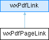

|
wxPdfDocument
1.4.0
Library for generating PDF documents from wxWidgets applications
|
|
wxPdfDocument
1.4.0
Library for generating PDF documents from wxWidgets applications
|
Class representing the sensitive area of links referring to a page. (For internal use only). More...
#include <pdflinks.h>

Public Member Functions | |
| wxPdfPageLink (double x, double y, double w, double h, const wxPdfLink &pdfLink) | |
| Constructor. | |
| virtual | ~wxPdfPageLink () |
| Destructor. | |
| double | GetX () |
| Get the X offset. | |
| double | GetY () |
| Get the Y offset. | |
| double | GetWidth () |
| Get the width. | |
| double | GetHeight () |
| Get the height. | |
| Public Member Functions inherited from wxPdfLink | |
| wxPdfLink (int linkRef) | |
| Constructor for internal link. | |
| wxPdfLink (const wxString &linkURL) | |
| Constructor for external link. | |
| wxPdfLink (const wxPdfLink &pdfLink) | |
| Copy constructor. | |
| virtual | ~wxPdfLink () |
| Destructor. | |
| bool | IsValid () const |
| Check whether this instance is a valid link reference. | |
| bool | IsLinkRef () const |
| Check whether this instance is an internal reference. | |
| int | GetLinkRef () const |
| Get the internal link reference. | |
| const wxString | GetLinkURL () const |
| Get the external link reference. | |
| void | SetLink (int page, double ypos) |
| Set page number and position on page. | |
| int | GetPage () |
| Get the page this link refers to. | |
| double | GetPosition () |
| Get the page position this link refers to. | |
Class representing the sensitive area of links referring to a page. (For internal use only).
| wxPdfPageLink::wxPdfPageLink | ( | double | x, |
| double | y, | ||
| double | w, | ||
| double | h, | ||
| const wxPdfLink & | pdfLink ) |
Constructor.
|
virtual |
Destructor.
|
inline |
Get the height.
|
inline |
Get the width.
|
inline |
Get the X offset.
|
inline |
Get the Y offset.